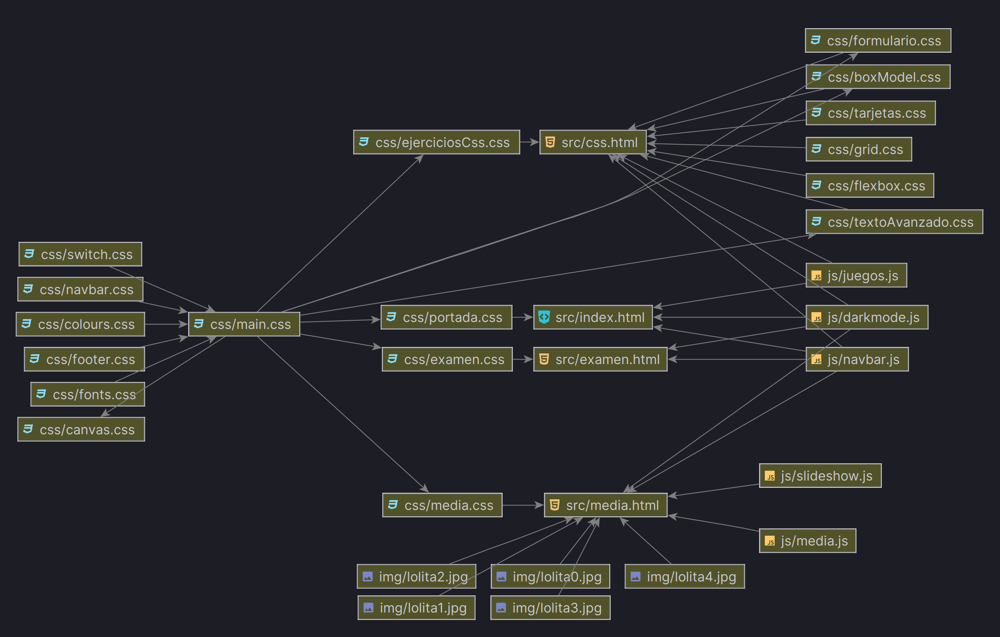

II Proyecto DIW
Seoane Prado, Pedro 2º DAW
Introducción
La web usa tecnologías base, no hemos usado ningún framework ni utilidad especial, se ha trabajado directamente con JavaScript (ES2015 un compromiso medio entre legacy y soporte de funciones modernas), HTML5 y CSS3.

La página web está preparada 100% para funcionar en offline no tiene ni una sola dependencia externa ni las fuentes, pese a todo está desplegada en GitHub pages:
Arquitectura (AKA Contenido)
La página web se apoya mucho en la idea de herencia, y se ha intentado llevar en medida de lo posible un modelo de extender estilos lo máximo posible por pequeños archivos comprensibles.
Así mismo se ha priorizado el uso de un clean code en donde hemos asignado nombres muy verbosos y largos, todas las clases tienen su nombre genérico así mismo con identificadores individuales.
En caso de querer mover esto a producción, con un minimizador cualquiera nos reduce todo lo no usado y optimizaría, pero aquí el objetivo era legibilidad, no ofuscar / rendimiento dando un bundle único para la web.
Híbrido de SPA y MPA
Usamos un enfoque híbrido, en donde los diversos elementos, si vemos la siguiente foto:

Vemos que sólo hay la página de juegos, la de media y la de ejercicios CSS.
Esto es porque, en medida de lo posible, aunque usamos páginas base estáticas (no hay enrutado ni backend alguno, es todo en el cliente) si que para evitar generar 20 páginas idénticas manipulamos en la de los juegos por ejemplo el inyectar en el DOM su juego seleccionado y luego retirarlo al salir.
Mode LastWriteTime Length Name
---- ------------- ------ ----
d---- 05/12/2023 16:52 assets
da--- 05/12/2023 15:31 css
d---- 05/12/2023 15:44 fonts
da--- 05/12/2023 1:40 img
da--- 05/12/2023 15:31 js
d---- 05/12/2023 15:10 src
d---- 02/12/2023 20:11 svg
d---- 05/12/2023 15:32 templates
da--- 05/12/2023 0:42 video
-a--- 02/12/2023 18:41 216 index.html
-a--- 02/12/2023 20:29 8342 package-lock.json
-a--- 02/12/2023 20:29 75 package.json
-a--- 05/12/2023 16:44 129 readme.md
Assets
Aquí tenemos los archivos multimedia genéricos, desde los propios del
Readme.md a algunos ficheros de audio usados en algún
juego.
Css
Todos los estilos, en principio, se ha usado el sistema de importaciones en cascada, esto quiere decir, que voy heredando las partes comunes y así sólo inyecto un CSS y tengo acceso a una uniformidad de variables para el tema oscuro, claro... reduzco la posibilidad de errores.
En el gráfico superior vemos que el
main.csshereda de los elementos de botón, navegación, pie de página, fuentes, colores y se genera el main.Luego, aunque IntelliJ no me lo permite mover, el main se inyecta (la flechita) por ejemplo en canvas.css, y al importar ese fichero ya tengo acceso a una uniformidad de estilos (en cascada, propiamente dichos).
@import "colours.css";
@import "fonts.css";
@import "switch.css";
@import "footer.css";
@import "navbar.css";
* {
margin: 0;
transition:
background-color 0.2s ease-in-out,
color 0.2s ease-in-out;
}
Por ejemplo en el main.css importamos los diversos
componentes básicos, los cuales tienen elementos genéricos a heredar
como los colores:
:root[data-theme="light"] {
--text: #040316;
--background: #ffffff;
--primary: #0079ad;
--secondary: #71b4d0;
--accent: #004461;
--backgroundSvg: url("../img/backgroundLight.svg");
--backgroundSvgAlt: url("../img/backgroundAltLight.svg");
--github: url("../img/github-mark.svg");
--crt: url("../img/synthwave.gif");
--close: url("../img/circleLight.svg");
}
:root[data-theme="dark"] {
--text: #eae9fc;
--background: #000000;
--primary: #52cbff;
--secondary: #2f718e;
--accent: #9ee2ff;
--backgroundSvg: url("../img/backgroundDark.svg");
--backgroundSvgAlt: url("../img/backgroundAltDark.svg");
--github: url("../img/github-mark-white.svg");
--crt: url("../img/crt.gif");
--close: url("../img/close.svg");
}
Así accediendo en cualquier otra página al trabajar, simplemente con
poner var(--nombreVariable) me garantizo una uniformidad, y
los cambios sólo tengo que hacerlos en un sitio, me permite consistencia
y rapidez.
El resto de ficheros, heredan de main.css y aplican cuestiones propias de cada ejercicio, está separado cada archivo con un nombre descriptivo para evitar grandes archivos de muchas líneas difíciles de mantener / leer.
Directory: D:\git\diwCanvas\css
Mode LastWriteTime Length Name
---- ------------- ------ ----
-a--- 05/12/2023 1:41 803 boxModel.css
-a--- 02/12/2023 22:50 1515 canvas.css
-a--- 05/12/2023 18:35 1376 colours.css
-a--- 05/12/2023 15:10 1726 ejerciciosCss.css
-a--- 04/12/2023 21:51 685 examen.css
-a--- 04/12/2023 21:51 896 flexbox.css
-a--- 02/12/2023 18:41 3073 fonts.css
-a--- 02/12/2023 18:41 747 footer.css
-a--- 05/12/2023 1:41 1161 formulario.css
-a--- 04/12/2023 21:51 1070 grid.css
-a--- 29/11/2023 17:22 0 index.css
-a--- 05/12/2023 15:31 376 main.css
-a--- 05/12/2023 1:41 3148 media.css
-a--- 05/12/2023 15:31 2013 navbar.css
-a--- 02/12/2023 18:41 221 pong.css
-a--- 02/12/2023 22:50 2818 portada.css
-a--- 05/12/2023 15:22 864 switch.css
-a--- 04/12/2023 21:51 1298 tarjetas.css
-a--- 04/12/2023 21:51 708 textoAvanzado.css
Lo único que puede ser lioso es el switch, que es el elemento de la navbar el botón para alternar entre modo oscuro y claro, el resto de elementos se ha intentado que sean altamente descriptibles sus nombres.
Plantillas (HTML)
Están compartimentadas entre la carpeta src para las
páginas estáticas o templates para elementos que inyectaré
en las páginas normales, es decir, los elementos
footer.html, navbar.html...
Directory: D:\git\diwCanvas\templates
Mode LastWriteTime Length Name
---- ------------- ------ ----
-a--- 02/12/2023 18:41 259 footer.html
-a--- 05/12/2023 15:32 785 navbar.html
Directory: D:\git\diwCanvas\src
Mode LastWriteTime Length Name
---- ------------- ------ ----
-a--- 05/12/2023 15:10 8440 css.html
-a--- 04/12/2023 23:50 0 docs.html
-a--- 04/12/2023 21:51 1237 examen.html
-a--- 05/12/2023 18:37 2348 index.html
-a--- 05/12/2023 1:41 3069 media.html
- CSS: Ejercicios de CSS
- DOCS: este documento.
- EXAMEN: el espacio que se pidió para el día 14 hacer los ejercicios.
- INDEX: la página principal, que coincide con la de juegos.
- MEDIA: los vídeos y el carrusel de fotos.
Hay otro index en el root del documento, ese sólo sirve para que nos abra la web y redirija al index de src, de este modo, las rutas relativas son iguales entre todas las páginas y es más fácil mantener el código y hacer las diversas insercciones. Si no el index será todo
img/foto.jpgy en el resto sería../img/foto.jpgy es un lío de mantener, de este modo todas las páginas estáticas tienen el acceso equivalente a todo.
Estilos
Scripts
En este caso, unas simples notas:
Directory: D:\git\diwCanvas\js
Mode LastWriteTime Length Name
---- ------------- ------ ----
-a--- 02/12/2023 20:29 4269 bichos.js
-a--- 02/12/2023 20:29 3458 billar.js
-a--- 02/12/2023 22:50 5394 bolas.js
-a--- 02/12/2023 22:50 2254 colores.js
-a--- 02/12/2023 18:41 715 darkmode.js
-a--- 02/12/2023 22:50 4352 faro.js
-a--- 04/12/2023 21:51 4000 juegos.js
-a--- 05/12/2023 1:41 2261 media.js
-a--- 02/12/2023 18:41 2486 molinillo.js
-a--- 02/12/2023 20:29 1662 monigote.js
-a--- 05/12/2023 15:31 1561 navbar.js
-a--- 02/12/2023 22:50 6436 pong.js
-a--- 05/12/2023 1:41 769 slideshow.js
-a--- 02/12/2023 20:59 3158 tanque.js
-
Los que tienen nombre de juego, son lo que representan lógicamente, sólo hay un detalle, y es como nosotros inyectamos el canvas al pulsar en el grid de cada juego... el DOM ya se ha cargado, por tanto, el Js que inyecta los canvas es
juegos.js, ese sí que tiene unevent load(), pero los juegos al inyectarse desde ahí no lo tienen, dado que concatenar dos eventos de carga es contraproducente. -
Los ficheros de la
navbar.js, leen el meta una etiqueta que pone:const pageId = document .querySelector('meta[name="page-id"]') .getAttribute("content");De ese modo, luego aplican un estilo de activo al botón de la navbar de modo automático del que leo del archivo de la
navbar.html, de ese modo no tengo que llevar a mano cuenta ni variar 30 veces los menús depende de la barra, se hace dinámicamente. -
Algunos juegos, se ha intentado usar
JSDoc, que es el sistema de tipado seguro que ofrece JavaScript y nos permite depurar algún error más fácil, y no dependemos de otro toolchain a mayores como TypeScript (este es nativo de todos los navegadores aunque menos conocido)./** * Represents a Wind Pinwheel. * @constructor * @param {HTMLCanvasElement} canvas - The HTML canvas element to draw the pinwheel on. * @param {number} pinwheelSize - The size of the pinwheel arms. * @param {number} poleWidth - The width of the pole. * @param {number} poleHeight - The height of the pole. */ class WindPinwheel { constructor(canvas, pinwheelSize, poleWidth, poleHeight) { this.canvas = canvas; this.ctx = canvas.getContext("2d"); this.pinwheelSize = pinwheelSize; this.poleWidth = poleWidth; this.poleHeight = poleHeight; this.rotationAngle = 0; ... etcétera ... }
- Por intentar equilibrar un poco, la mitad de los ejercicios se han intentado hacer usando orientación programada a prototipos / objetos (por composición muy básico), y la otra mitad con funcional clásica.
Otras características
-
La página utiliza muchos SVGs animados para fondos y animaciones, pesan muy poquito menos que una foto, vectores escalables... un poco lo bueno de ambos mundos.
-
Los juegos de
canvasse inyectan el DOM y descargan, esa página es "una SPA" más o menos. -
El diseño es responsive y se ha probado hasta en móviles, lo cual ha sido un poco un desafío porque he intentado anidar los ejercicios.css dentro del propio grid con escalados proporcionales...

-
Los juegos, los canvas no sólo pueden redimiensionarse, si no que, sus coordenadas siguen funcionando dado que en tiempo dinámico hago la traslación de coordenadas del ancho visible al del canvas base.